operanthouseのヘッダー
Kitaya lab
Installation of Electronics on the Body
Prepare the following screws and nuts.
M2x20 mm
M2 nuts
M3x20 mm
M3x50 mm
M3 nuts
Setup of Raspberry Pi4
First, make a SD card with the Raspberry Pi OS installed.
Chose the storage size depend on how much you are planning to save movies (1h 320x240 pixel movie requires around 80MB).
Connect SD card to Windows computer through SD card reader.
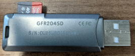
Download Raspberry Pi imager from official download site (https://www.raspberrypi.org/software/) to your computer.
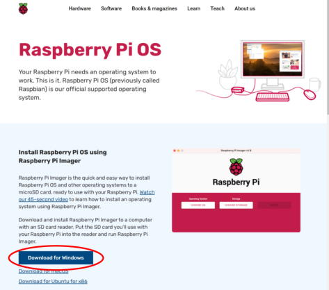
Run it.
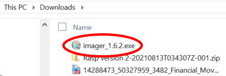
Chose Raspberry Pi OS(32bit).
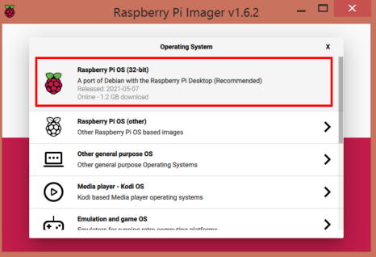
Chose SD card as the destination (Never chose other storage !).
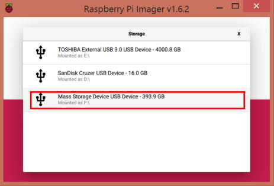
Click "WRITE" button to start the initialization.

Assemble the case for Raspberry Pi. This instruction will explain with Miuzei Raspberry Pi 4 case.
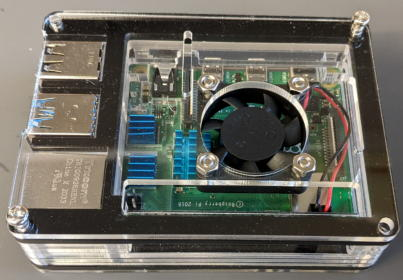
Insert the SD card into the RasPi.
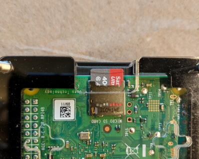
Prepare M3x50 mm screws and nuts.
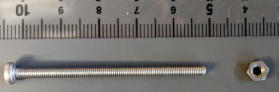
Mount the Raspberry Pi onto the body part using the M3 screws and nuts. If the holes are undersized, enlarge them with a 3 mm drill.
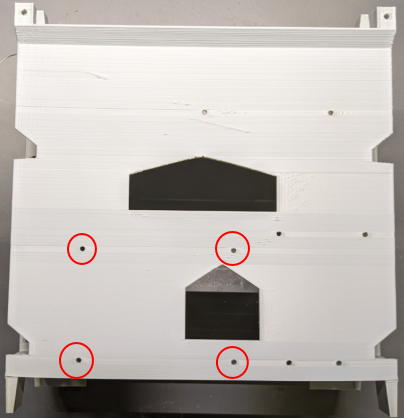
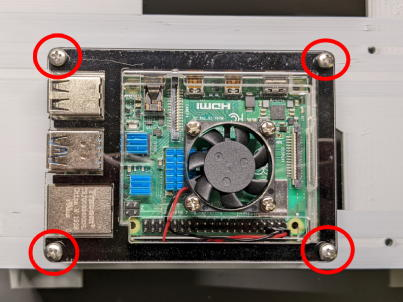
Fasten the screws by nuts.
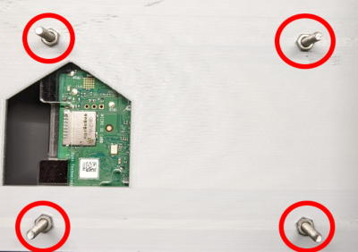
*If you will use Raspberry Pi 5, secure it to the body with M2 screws (no case is required). Place M3 nuts as spacers between the Raspberry Pi and the body to avoid damaging the back of the board.
Installation of the Arduino UNO
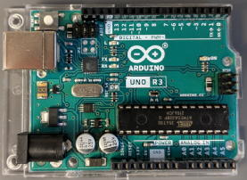
Prepare M2x20 mm screws and nuts.
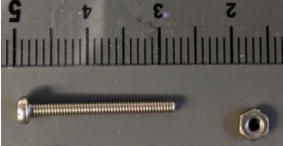
Mount the Arduino onto body using M2 screws,
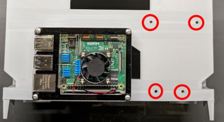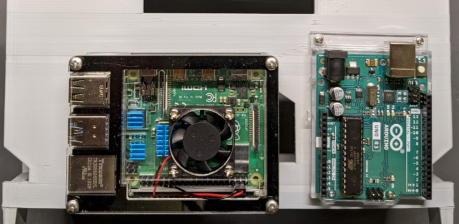
Installation of the Switching Board
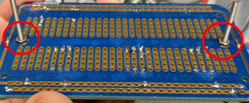
Use those holes.
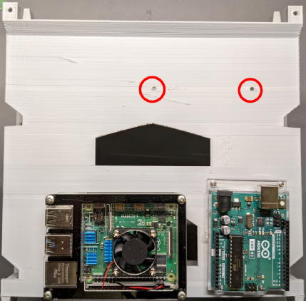
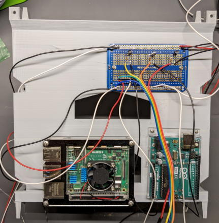
Connect jumper wires from the switching board to the Arduino as follows:
GND - Ground of the switching board
Ch13 - Ceiling illumination
Ch12 - Infrared LED
Ch11 - Sync signal (if necessary)
Ch10 - Cue LED
Ch3 - Servo motor
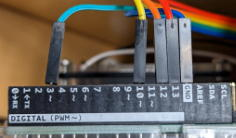
Connect the power cable from the switching board to the Raspberry Pi (GND and 5V output).
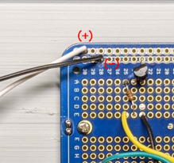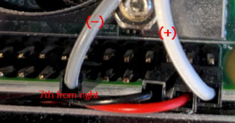
Mounting of the Monitor
Insert M3 nuts into the recessed hollows on the body.
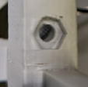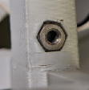
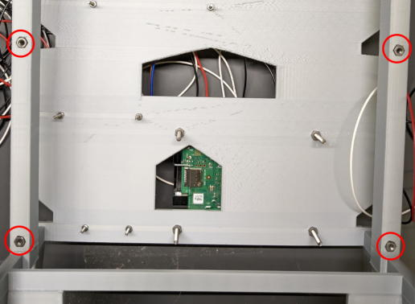
Thread M3x50 screws through the nuts and attach the monitor push adapters.
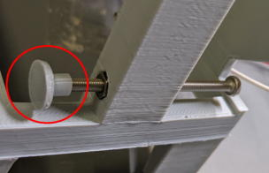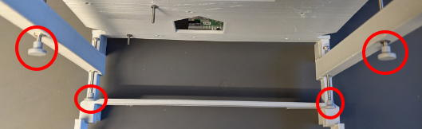
Mount the monitor and rotate the screws until the monitor is secured in the vertical position.
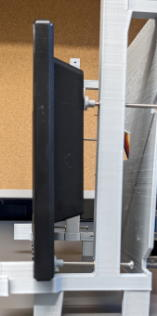
Connect the monitor to the Raspberry Pi using an HDMI cable (HDMI-Mini to HDMI).
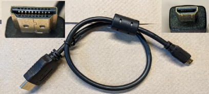
The HDMI port of the Raspberry Pi is here,
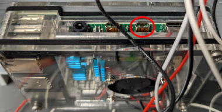
You have done all of the wiring of electronic parts on the body.
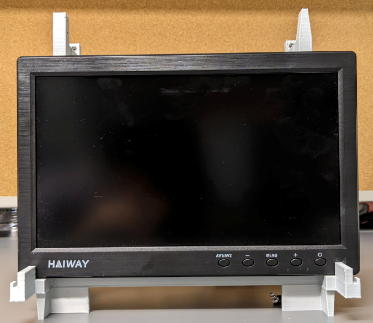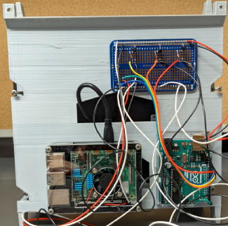